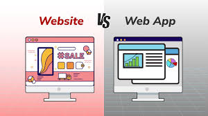

Web Applications

What is a Web Application?
A program that runs in a web browser. Unlike a regular website, a web app responds to user input and changes its content dynamically without reloading the whole page.
Key Facts
- Accessed through a browser — no installation required.
- Work on any device with a browser and internet connection.
- Examples: Gmail, Google Docs, YouTube, online banking.
Static vs. Dynamic Websites
- Static - Every visitor sees the same fixed content. Built with HTML and CSS only.
- Dynamic - Content changes based on the user, time, or data. Built with server-side code.
Frontend vs. Backend
- Frontend - What the user sees. Built with HTML, CSS, and JavaScript.
- Backend - The server-side logic and database that powers the app.
Types of Web Applications
- Single Page Apps (SPAs) - Load once and update content dynamically. Example: Gmail.
- Progressive Web Apps (PWAs) - Web apps that can be installed and work offline.
- E-commerce Apps - Online stores with carts, payments, and user accounts.
- Content Management Systems - Platforms for managing web content.